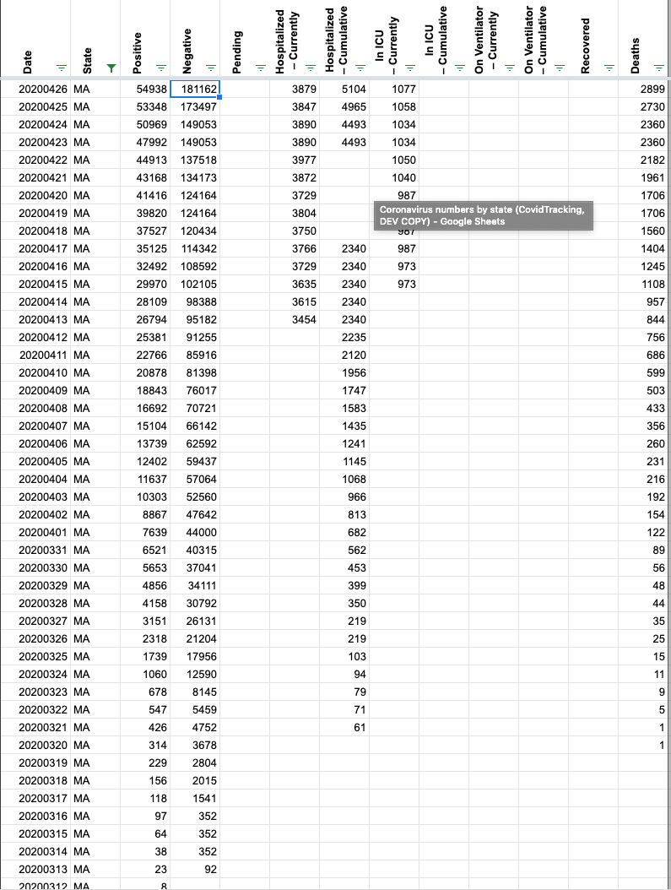
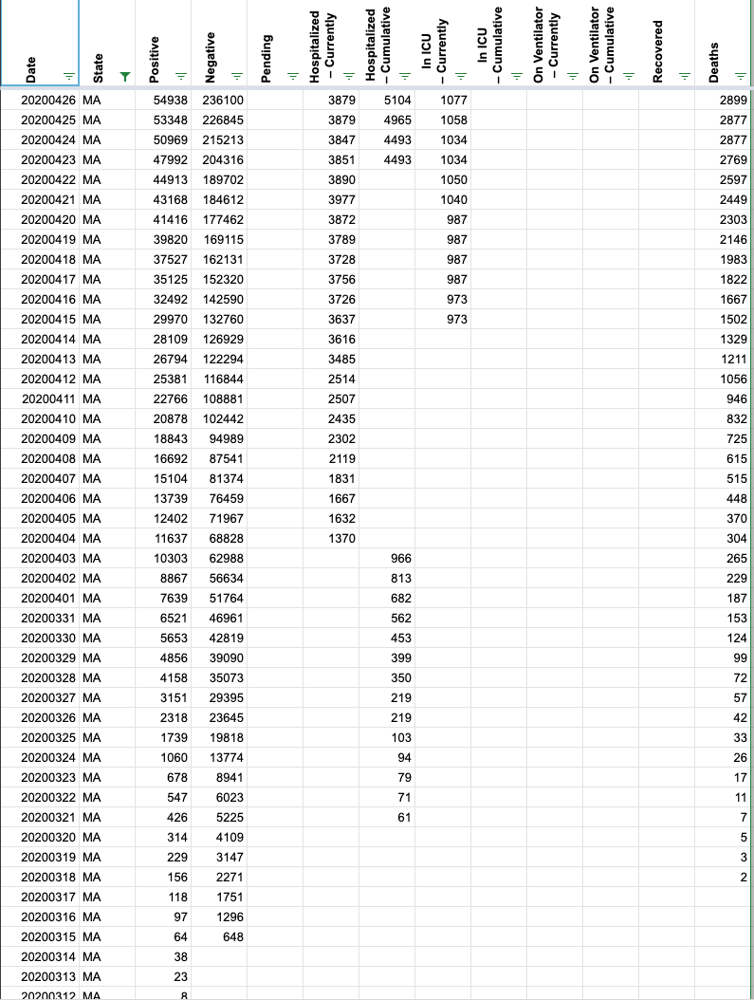

MA historical data incorrect for 4/20/20
Issue number 251
paulkelley opened this issue on April 21, 2020 at 4:17 pm
The States Historical Data [api/v1/dates.daily.json] has incorrect data for MA on 4/20/20.
Issue number 251
paulkelley opened this issue on April 21, 2020 at 4:17 pm
The States Historical Data [api/v1/dates.daily.json] has incorrect data for MA on 4/20/20.
Hello,
We have found that MA has updated its reporting and we have completely updated CTP data to match.
State Date: COVID-19 Dashboard - April 26, 2020
Before Update:
Date | State | Positive | Negative 20200426 | MA | 54938 | 181162 20200425 | MA | 53348 | 173497 20200424 | MA | 46023 | 149053 20200423 | MA | 46023 | 149053 20200422 | MA | 42944 | 137518 20200421 | MA | 41199 | 134173 20200420 | MA | 38077 | 124164 20200419 | MA | 38077 | 124164 20200418 | MA | 36372 | 120434 20200417 | MA | 34402 | 114342 20200416 | MA | 32181 | 108592 20200415 | MA | 29918 | 102105 20200414 | MA | 28163 | 98388 20200413 | MA | 26867 | 95182 20200412 | MA | 25475 | 91255 20200411 | MA | 22860 | 85916 20200410 | MA | 20974 | 81398 20200409 | MA | 18941 | 76017 20200408 | MA | 16790 | 70721 20200407 | MA | 15202 | 66142 20200406 | MA | 13837 | 62592 20200405 | MA | 12500 | 59437 20200404 | MA | 11736 | 57064 20200403 | MA | 10402 | 52560 20200402 | MA | 8966 | 47642 20200401 | MA | 7738 | 44000 20200331 | MA | 6620 | 40315 20200330 | MA | 5752 | 37041 20200329 | MA | 4955 | 34111 20200328 | MA | 4257 | 30792 20200327 | MA | 3240 | 26131 20200326 | MA | 2417 | 21204 20200325 | MA | 1838 | 17956 20200324 | MA | 1159 | 12590 20200323 | MA | 777 | 8145 20200322 | MA | 646 | 5459 20200321 | MA | 525 | 4752 20200320 | MA | 413 | 3678 20200319 | MA | 328 | 2804 20200318 | MA | 256 | 2015 20200317 | MA | 218 | 1541 20200316 | MA | 164 | 352 20200315 | MA | 138 | 352 20200314 | MA | 138 | 352 20200313 | MA | 123 | 92 20200312 | MA | 95 | 20200311 | MA | 92 | 20200310 | MA | 92 | 20200309 | MA | 41 | 20200308 | MA | 13 | 20200307 | MA | 13 | 20200306 | MA | 8 | 20200305 | MA | 2 | 20200304 | MA | 2 | 
After Update 